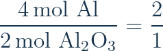
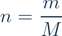
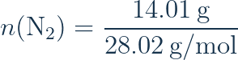
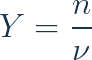
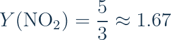
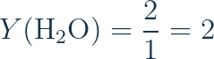
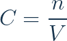

למידה פעילה · חקר · הסבר · יישום
סטוכיומטריה:
לחשוב ביחסים, לא רק לחשב
במהלך ההרצאה נחזה, נחקור, נבחן רעיונות ונפעיל מעבדות לימוד עצמאיות.
מה באמת נשמר בתגובה כימית?
לפניכם תערובת של מולקולות מימן וחמצן. מה יכולה התגובה לייצר?
תחזית
שאלת מפתח
כמה אטומי H וכמה אטומי O יש לפני התגובה? כמה חייבים להופיע אחרי התגובה?
משמאל 4 אטומי מימן ו־2 אטומי חמצן; מימין בדיוק אותם אטומים.
מה משתנה כשמזיזים מספר בנוסחה?
שנו את המקדם ואת האינדקסים. האם השתנתה כמות החומר או זהותו?
4
2
שאלת דיון
למה שינוי האינדקס משנה את הנוסחה הכימית, אבל שינוי המקדם אינו משנה את זהות החומר?
חלק מהנוסחאות המתקבלות הן דוגמאות היפותטיות לספירת אטומים בלבד.
הפעילות נפתחת בכרטיסייה חדשה, וההרצאה נשארת פתוחה.
פתחו את S1איך נדע אם משוואה מאוזנת?
בחרו את הפעולה הראשונה
המקדמים מאזנים את שני היסודות בלי לשנות את נוסחאות החומרים.
כלל לדיון
מה מותר לנו לשנות במהלך איזון? מה לעולם אסור לשנות?
תלמידים פותרים בהדרגה עם רמזים והפחתת תמיכה.
פתחו את S2מקדמים מספרים לנו יחס — של מה?
כדי לקבל מול אחד של Al₂O₃, כמה מול Al דרושים?

היחס הוא 2 מול אלומיניום לכל 1 מול אלומינה.
איזה יחס אינו נכון?
מקדמים במשוואה מאוזנת מבטאים יחס חלקיקים וגם יחס מולים — אך לא יחס גרמים.
מול של כל חומר עשוי לשקול מסה שונה. לכן ממירים בין גרמים למולים לפני שימוש ביחס המולים.
איך מגיעים מגרמים של מגיב לגרמים של תוצר?
בנו את המסלול בעצמכם
איזו יחידה חייבת להופיע אחרי גרמים ולפני שניתן להשתמש במקדמים?
ממסה למולים, יחס מולים, וחזרה למסה — עם שאלות מנחות.
פתחו את S3קודם גרמים למולים, אחר כך יחס מולים
חשבו בעזרת המשוואה המוכרת


רק אחרי ההמרה
כשהגענו למולים של N₂, אפשר להשתמש ביחס מן המשוואה המאוזנת ולגלות כמה מול NH₃ יתקבלו.
מה קובע כמה מוצרים נוכל להכין?
בחרו מתכון ושנו את המלאי. חישבו כמה מוצרים שלמים אפשר להרכיב.
2 bread + 1 cheese → 1 sandwich
מה ייגמר ראשון?
מוצרים שלמים:
כריכים, עוגיות, מכוניות — ואז משוואה כימית.
פתחו את S4אותו רעיון — במספרי מולים
נתונים
n(NO₂) = 5 mol
n(H₂O) = 2 mol

חשבו שני ערכי Y. איזה קטן יותר?


NO₂ הוא המגיב המגביל כי ערך Y שלו קטן יותר.
הגשר מהחיים לכימיה
כמו מספר הכריכים שאפשר להכין מכל מרכיב בנפרד, Y מודד כמה פעמים אפשר לבצע את יחס התגובה מן המלאי של כל מגיב.
ריכוז: כמה מומס יש בכל ליטר?

ריכוז 0.50 M
תחזית לכיתה
מה יקרה לריכוז אם נכפיל את נפח התמיסה בלי לשנות את מולי המומס?
הריכוז יקטן לחצי. מספר מולי המומס נשאר קבוע, אך הנפח מוכפל.
דילול: מה משתנה, ומה נשאר?
התנסו בדילול
C₁ = 2.00 M · V₁ = 50 mL
200 mL
0.50 M
מודל אידיאלי: מניחים חיבור נפחים.
איזו כמות נשמרת?
לפני הדילול ואחריו אותה כמות מומס. רק ריכוזו בתמיסה משתנה.
כמה מים צריך להוסיף?
תמיסה מכילה 30.0 גרם NaCl בתוך 100 מ״ל תמיסה. רוצים להגיע לריכוז 0.50 M.
מה בדיוק מבקשים?
קודם מולי המומס, אחר כך הנפח הסופי הנדרש, ולבסוף מחסרים את הנפח ההתחלתי.
עבודה בשני שלבים
פתרו יחד את שלוש שאלות הפתיחה. לאחר מכן תלמידים ממשיכים בעצמם, עם רמזים ועם עוד שלוש שאלות לתרגול.
מה למדנו להסביר, לא רק לחשב?
שימור
איזון משוואות מבטיח שאטומים אינם נוצרים ואינם נעלמים.
יחסים
מקדמים קובעים יחסי מולים; יחידות עוזרות לבחור מסלול המרה.
מגבלה ודילול
המגיב המגביל קובע את הייצור המרבי; בדילול נשמרת כמות המומס.